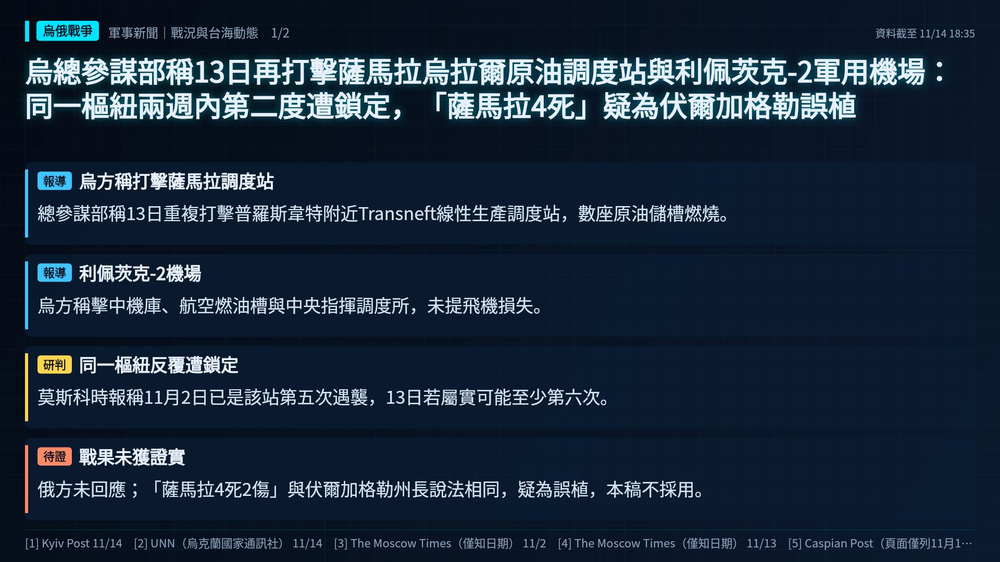
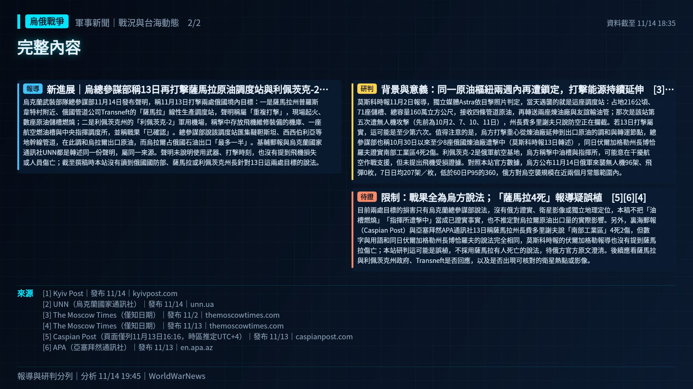
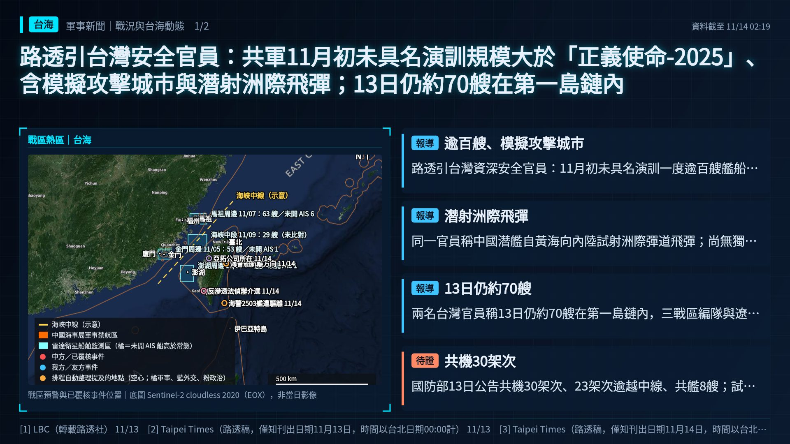
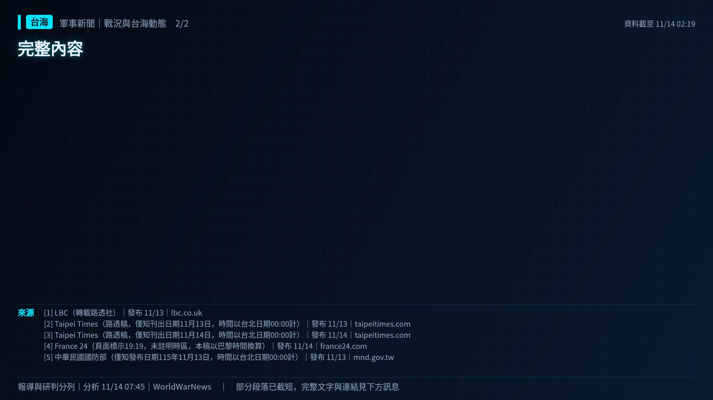
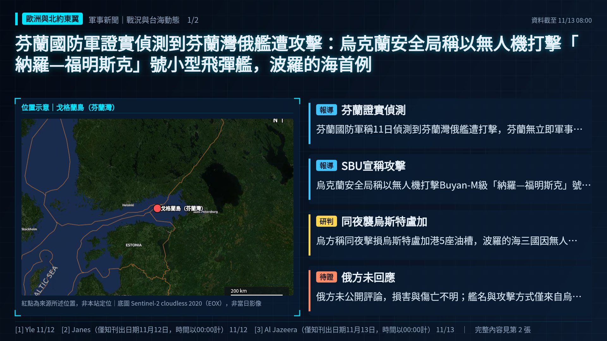
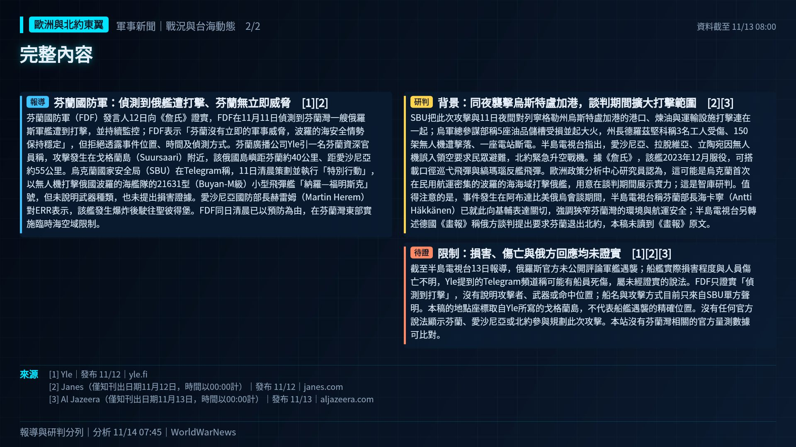
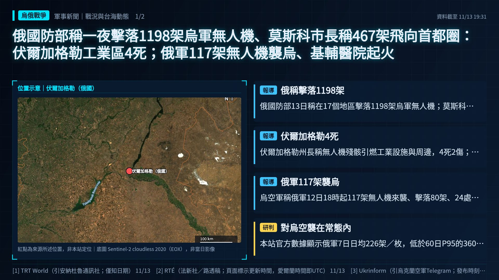
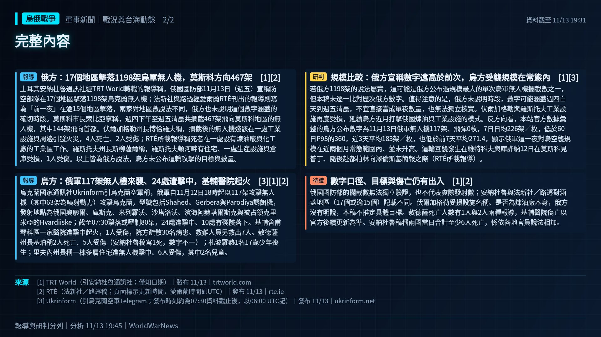

後備召集或動員法令
召集後備、延長役期或修改動員法，是開戰前最明確的準備動作之一。
報導標題：Russia's 'hidden mobilization': The 'expendable' lives fueling Putin's war on Ukraine 來源 ↗
公開來源整理｜最後更新 2026-11-15 02:45（台北）｜每 3 小時更新，出事時加開
📌 11/15（日）每日摘要｜台海 2 級升溫：共機架次連日爬升｜美伊 2 級升溫：美軍打擊或攔截行動｜歐洲北約 2 級升溫：戰機緊急升空、機場關閉或交戰規則變更｜烏俄 2 級升溫：能源設施遭打擊比例上升｜朝鮮半島 1 級常態｜南海 2 級升溫｜以巴紅海 1 級。降溫訊號：台海、美伊、歐洲北約、烏俄。市場無異常波動。
沒有指標超過門檻
沒有指標超過門檻
沒有指標超過門檻
召集後備、延長役期或修改動員法，是開戰前最明確的準備動作之一。
報導標題：Russia's 'hidden mobilization': The 'expendable' lives fueling Putin's war on Ukraine 來源 ↗
北約國家為因應俄國攻擊而緊急升空或關閉機場，代表前線緊張升高。
報導標題：Romania Scrambles Jets After Overnight Snake Island Alerts 來源 ↗
安理會表決、IAEA 報告或北約峰會等正式行動。
報導標題：Iran's Mission in Vienna Responds to IAEA Report: Aggression Cannot Be Erased by Resolutions 來源 ↗
🕊️ 11/12 7 家媒體報導降溫訊號（通話、會談、停火）：Taiwan is taking part in APEC China summit on an 'eq
已知項目未觸發（6/6 項有資料）
已知項目未觸發（4/4 項有資料）
已知項目未觸發（1/1 項有資料）
已知項目未觸發（5/5 項有資料）
已知項目未觸發（2/2 項有資料）
🕊️ 11/14 20 家媒體報導降溫訊號（通話、會談、停火）：Report: Mossad Chief Visits Washington For Iran Tal
已知項目未觸發（3/3 項有資料）
已知項目未觸發（4/4 項有資料）
已知項目未觸發（4/4 項有資料）
已知項目未觸發（1/1 項有資料）
已知項目未觸發（5/6 項有資料）
🕊️ 11/14 9 家媒體報導降溫訊號（通話、會談、停火）：Europe's security cannot be part of Russia-Ukraine p
已知項目未觸發（1/1 項有資料）
已知項目未觸發（5/5 項有資料）
🕊️ 11/15 3 家媒體報導降溫訊號（通話、會談、停火）：梅爾茨嚴正呼籲川普：APEC與普丁會談「不要帶來任何意外」
已知項目未觸發（1/1 項有資料）
北約國家為因應俄國攻擊而緊急升空或關閉機場，代表前線緊張升高。
報導標題：Romania Scrambles Jets After Overnight Snake Island Alerts 來源 ↗
打擊黎巴嫩、敘利亞、伊拉克或葉門目標，衝突有擴大到多國的風險。
報導標題：Israel carries out airstrikes and explosions in southern Lebanon — Anadolu Agency 來源 ↗
召集後備、延長役期或修改動員法，是開戰前最明確的準備動作之一。
報導標題：Russia's 'hidden mobilization': The 'expendable' lives fueling Putin's war on Ukraine 來源 ↗
俄國無人機或飛彈越界進入北約國家，北約需判斷是否回應。
報導標題：Drone incursions trigger air alerts across Lithuania, NATO jets scrambled 來源 ↗
北約國家為因應俄國攻擊而緊急升空或關閉機場，代表前線緊張升高。
報導標題：Spanish NH90s scrambled for first time in NATO mission in Romania — AeroTime 來源 ↗
安理會表決、IAEA 報告或北約峰會等正式行動。
報導標題：Iran's Mission in Vienna Responds to IAEA Report: Aggression Cannot Be Erased by Resolutions 來源 ↗
衝突雙方通話、會談或停火協商，可能讓緊張暫緩（不會降低燈號）。
報導標題：Report: Mossad Chief Visits Washington For Iran Talks With Trump Officials 來源 ↗
衝突雙方通話、會談或停火協商，可能讓緊張暫緩（不會降低燈號）。
報導標題：Europe's security cannot be part of Russia-Ukraine peace talks, EU leaders say 來源 ↗
新一輪制裁或出口管制，反映外交施壓升級。
報導標題：EU To Announce New Russia Sanctions Package, 2027 Ukraine Funding Plan 來源 ↗
衝突雙方通話、會談或停火協商，可能讓緊張暫緩（不會降低燈號）。
報導標題：Europe to join next round of Russia talks: US, Ukraine 來源 ↗
安理會表決、IAEA 報告或北約峰會等正式行動。
報導標題：UN nuclear watchdog IAEA raises alarm over uninspected Iranian uranium enrichment plant at Isfahan 來源 ↗
衝突雙方通話、會談或停火協商，可能讓緊張暫緩（不會降低燈號）。
報導標題：EU leaders tussle over whom to send to Ukraine peace talks with Russia 來源 ↗
歐洲各國增加國防預算、恢復徵兵或發放民防手冊，反映對俄威脅的評估升高。
報導標題：‘You’re our heroes’ - Polish PM thanks Dublin Civil Defence members for helping Kraków shooting victims 來源 ↗
歐洲各國增加國防預算、恢復徵兵或發放民防手冊，反映對俄威脅的評估升高。
報導標題：Germany must rein in debt-fuelled defence spending: experts 來源 ↗
歐洲各國增加國防預算、恢復徵兵或發放民防手冊，反映對俄威脅的評估升高。
報導標題：EU warns of fiscal peril as defence spending climbs amid high energy costs 來源 ↗
歐洲各國增加國防預算、恢復徵兵或發放民防手冊，反映對俄威脅的評估升高。
報導標題：31 high schools blocked across France amid renewed mobilization 來源 ↗
晶片、稀土等關鍵材料的出口管制，牽動台灣半導體供應鏈。
報導標題：China keeps making end runs around America’s chip export controls: Report 來源 ↗
晶片、稀土等關鍵材料的出口管制，牽動台灣半導體供應鏈。
報導標題：China Delays Rare Earth Restrictions Under U.S. Trade Truce 來源 ↗
另有 2 則，見時間軸
晶片、稀土等關鍵材料的出口管制，牽動台灣半導體供應鏈。
報導標題：US export controls: Bessent criticises Commerce delay on Nvidia chip limits to China 來源 ↗
衝突雙方通話、會談或停火協商，可能讓緊張暫緩（不會降低燈號）。
報導標題：Report: Mossad Chief Visits Washington For Iran Talks With Trump Officials 來源 ↗
晶片、稀土等關鍵材料的出口管制，牽動台灣半導體供應鏈。
報導標題：Nvidia CEO Jensen Huang resigns as US lawmakers push tougher chip export controls 來源 ↗
另有 9 則，見時間軸
衝突雙方通話、會談或停火協商，可能讓緊張暫緩（不會降低燈號）。
報導標題：Europe's security cannot be part of Russia-Ukraine peace talks, EU leaders say 來源 ↗
衝突雙方通話、會談或停火協商，可能讓緊張暫緩（不會降低燈號）。
報導標題：Europe to join next round of Russia talks: US, Ukraine 來源 ↗
衝突雙方通話、會談或停火協商，可能讓緊張暫緩（不會降低燈號）。
報導標題：Putin proposes new humanitarian mission after US-Russia talks 來源 ↗
新一輪制裁或出口管制，反映外交施壓升級。
報導標題：The United Kingdom was the first country in the world to impose sanctions against all 10 of Russia's largest oil compani 來源 ↗
另有 9 則，見時間軸
北韓以試射展示打擊能力，常與美韓演習或政治時間點相關；日本、南韓會同步發布警報與軌跡。
報導標題：North Korea fires multiple ballistic missiles in latest weapons tests 來源 ↗
安理會表決、IAEA 報告或北約峰會等正式行動。
報導標題：Iran's Mission in Vienna Responds to IAEA Report: Aggression Cannot Be Erased by Resolutions 來源 ↗
安理會表決、IAEA 報告或北約峰會等正式行動。
報導標題：UN nuclear watchdog IAEA raises alarm over uninspected Iranian uranium enrichment plant at Isfahan 來源 ↗
衝突雙方通話、會談或停火協商，可能讓緊張暫緩（不會降低燈號）。
報導標題：Vance Considers Direct Talks With Iran Hard-Liner in Push to End War 來源 ↗
衝突雙方通話、會談或停火協商，可能讓緊張暫緩（不會降低燈號）。
報導標題：Iran accuses US of ‘manufacturing fake news about imaginary talks’ 來源 ↗
另有 3 則，見時間軸
新一輪制裁或出口管制，反映外交施壓升級。
報導標題：EU To Announce New Russia Sanctions Package, 2027 Ukraine Funding Plan 來源 ↗
衝突雙方通話、會談或停火協商，可能讓緊張暫緩（不會降低燈號）。
報導標題：EU leaders tussle over whom to send to Ukraine peace talks with Russia 來源 ↗
歐洲各國增加國防預算、恢復徵兵或發放民防手冊，反映對俄威脅的評估升高。
報導標題：‘You’re our heroes’ - Polish PM thanks Dublin Civil Defence members for helping Kraków shooting victims 來源 ↗
另有 14 則，見時間軸
依據：AEI／ISW｜本站自行整理，非全文翻譯
依據：The Korea Times、Korea JoongAng Daily、NK News、NK Pro｜本站自行整理，非全文翻譯
依據：美聯社（Yahoo轉載）、Malay Mail、Manila Times、Philippine Star｜本站自行整理，非全文翻譯
依據：Critical Threats（CTP-ISW）｜本站自行整理，非全文翻譯
依據：Critical Threats（CTP-ISW）｜本站自行整理，非全文翻譯
依據：Yle、ISW／Critical Threats、ERR News｜本站自行整理，非全文翻譯
依據：ISW／Critical Threats｜本站自行整理，非全文翻譯


烏克蘭武裝部隊總參謀部11月14日發布聲明，稱11月13日打擊兩處俄國境內目標：一是薩馬拉州普羅斯韋特村附近、俄國管道公司Transneft的「薩馬拉」線性生產調度站，聲明稱屬「重複打擊」，現場起火、數座原油儲槽燃燒；二是利佩茨克州的「利佩茨克-2」軍用機場，稱擊中存放飛機維修裝備的機庫、一座航空燃油槽與中央指揮調度所，並稱戰果「已確認」。總參謀部說該調度站匯集韃靼斯坦、西西伯利亞等地幹線管道，在此調和烏拉爾出口原油，而烏拉爾占俄國石油出口「最多一半」。基輔郵報與烏克蘭國家通訊社UNN都是轉述同一份聲明，屬同一來源。聲明未說明使用武器、打擊時刻，也沒有提到飛機損失或人員傷亡；截至撰稿時本站沒有讀到俄國國防部、薩馬拉或利佩茨克州長針對13日這兩處目標的說法。
莫斯科時報11月2日報導，獨立媒體Astra依目擊照片判定，當天遇襲的就是這座調度站：占地216公頃、71座儲槽、總容量160萬立方公尺，接收四條管道原油，再轉送兩座煉油廠與友誼輸油管；那次是該站第五次遭無人機攻擊（先前為10月2、7、10、11日），州長費多里謝夫只說防空正在攔截。若13日打擊屬實，這可能是至少第六次。值得注意的是，烏方打擊重心從煉油廠延伸到出口原油的調和與轉運節點，總參謀部也稱10月30日以來至少8座俄國煉油廠遭擊中（莫斯科時報13日轉述），同日伏爾加格勒州長博恰羅夫證實南部工業區4死2傷。利佩茨克-2是俄軍航空基地，烏方稱擊中油槽與指揮所，可能意在干擾航空作戰支援，但未提出飛機受損證據。對照本站官方數據，烏方公布11月14日俄軍來襲無人機96架、飛彈0枚，7日日均207架／枚，低於60日P95的360，俄方對烏空襲規模在近兩個月常態範圍內。
目前兩處目標的損害只有烏克蘭總參謀部說法，沒有俄方證實、衛星影像或獨立地理定位，本稿不把「油槽燃燒」「指揮所遭擊中」當成已證實事實，也不推定對烏拉爾原油出口量的實際影響。另外，裏海郵報（Caspian Post）與亞塞拜然APA通訊社13日稱薩馬拉州長費多里謝夫說「南部工業區」4死2傷，但數字與用語和同日伏爾加格勒州長博恰羅夫的說法完全相同，莫斯科時報的伏爾加格勒報導也沒有提到薩馬拉傷亡；本站研判這可能是誤植，不採用薩馬拉有人死亡的說法，待俄方官方原文澄清。後續應看薩馬拉與利佩茨克州政府、Transneft是否回應，以及是否出現可核對的衛星熱點或影像。


伊朗海軍與革命衛隊11月14日（週六）先後宣稱，共有三艘油輪在荷莫茲海峽觸雷起火。新阿拉伯人報整理，革命衛隊海軍稱兩艘關閉雷達與定位系統、試圖經「未授權航道」通過的油輪在海峽南側爆炸起火；伊朗正規海軍則稱第三艘在海峽東側「不安全且禁止的區域」關閉追蹤系統航行，觸雷後起火停船。路透經中東報英文版刊出的稿件稱，伊朗官媒說的這艘是在週六上午於海峽東部觸雷，路透無法立即核實。伊方都沒有公布船名、船旗、船東、船員或傷亡。半島電視台直播頁稱這是過去24小時荷莫茲周邊第五艘遇事油輪，但未說明怎麼計算。路透與新阿拉伯人報轉述的是同一批伊朗官方說法，不是獨立觀測。
中東之眼轉述英國海事貿易行動辦公室（UKMTO）11月13日週報：截至11月11日的一週，荷莫茲海峽內外至少7艘油輪遇襲、共8起事件，其中3艘續航、3艘需要協助、2艘結果不明，沒有沉沒；波斯灣一起事件造成多名船員受傷，最新一起是11日拉斯海瑪西北14浬一艘油輪機艙中彈、船員撤離。週報稱過境船次比戰前低約65%（本週出港139、進港169艘次，前一週為170與155），威脅等級維持「嚴重」；紅海自8月24日以來未再有攻擊。UKMTO稱2月28日開戰以來累計記錄163起衝突相關事件。
本站先前已報導伊朗方面11月6日、10日與11日多次宣稱油輪觸雷；這次是同一天由海軍與革命衛隊兩個系統分別宣稱、合計三艘，頻率可能升高。值得注意的是，伊方每次都強調船隻「關閉追蹤系統」「走未授權航道」，可能是在把通航變成須經德黑蘭許可，藉此對抗美方封鎖。對照本站官方數據，UKMTO近7天灣區遇襲通報6件、最新為11日第204號，低於60日P95的12件，截至撰稿時UKMTO尚未有14日新通報；布蘭特原油最近交易日也沒有異常波動，USNI 11月9日週報有2艘美軍航艦在阿拉伯海。外交面，半島電視台引美國資深官員稱川普下週在深圳APEC峰會將與中、俄領袖討論伊朗戰爭。另外，中央司令部13日否認革命衛隊稱摧毀巴林美軍預警雷達的說法，稱伊方向巴林發射的兩架單向攻擊無人機都被美軍擊落、無傷亡或損害（自由歐洲電台）。
三艘油輪全都只有伊朗方說法，沒有船東、船旗國、UKMTO或美國中央司令部確認，也無法排除重複計算；「觸雷」是伊方說法，是否為水雷、飛彈或無人機所致無從判斷。半島電視台「24小時第五艘」的口徑未說明，本稿不當成獨立計數。UKMTO週報數字為截至11日，不含14日事件。後續應看UKMTO是否發出新編號警告、船東是否證實受損，以及美方是否回應伊朗的「授權航道」要求。


路透社11月13日引述一名不具名的台灣資深安全官員報導，中國軍方與海警11月初在西太平洋及台灣周邊進行未事先公布的大型演訓，一度集結逾100艘艦船，規模大於近一年前最後一次具名對台演習「正義使命-2025」；演訓內容包括對其他國家軍隊及城市（含台灣城市）的模擬攻擊。該官員並稱，演訓期間一艘中國潛艦從黃海向中國內陸試射一枚洲際彈道飛彈。官員形容這是「無聲的演習，實際上是無聲的恫嚇」。另有兩名台灣安全官員稱，兵力已縮減，13日（週五）仍約70艘艦船在第一島鏈內活動。國安會秘書長吳釗燮12日深夜在X上表示艦船總數下降，但北部、東部、南部戰區編隊與遼寧號打擊群仍在菲律賓以東，共軍在台灣周邊空中活動仍高。路透另引一名外國情報來源稱，不具名演訓似為刻意安排，可施壓又避免外交反彈。中國國防部未回應路透詢問，北京先前稱遼寧號屬例行訓練、不針對任何國家。
這是台灣官方人士首度公開把11月初的艦船集結描述為含模擬攻擊與潛射洲際飛彈試射的演訓；先前國防部長顧立雄10日只以「區域拒止」形容遼寧號與其他戰區編隊，國防部對路透詢問也僅援引顧部長說法。官員認為三戰區海軍協同顯示在演練封鎖台灣與更廣的西太平洋作戰，並可能整合為單一遠海作戰力量；這是台方研判，北京未證實。背景上，習近平12日發表對台政策講話、呼籲和平統一而未提武力，APEC領袖會議11月18至19日在深圳舉行，川習預料會面。法國24電視台13日的查核報導則指出，網路流傳「中國已封鎖台灣」的動畫地圖誤導，HEC巴黎研究員韋宏（Emmanuel Véron）認為這是施壓訓練而非即將入侵的準備，且8艘艦艇不足以構成封鎖；民用航運持續通行。值得注意的是，未公布名稱的演訓可能讓外界難以界定起訖，使官方數據門檻指標難以完整反映。
潛射洲際飛彈與模擬攻擊城市目前只有不具名台灣官員的說法，本輪未找到中國官方、美日政府或其他獨立來源證實，也未說明試射日期、型號或落點；《台北時報》14日頭版轉載的路透稿同時出現「自黃海發射」與「自台灣以東海域發射潛射飛彈打擊內陸目標」兩種描述，地點有矛盾，本稿不採信任何精確位置。兩份《台北時報》稿與LBC均為同一路透稿的轉載，不是多個獨立觀測。官方數據比對：國防部13日公告，12日6時至13日6時共機30架次（逾越中線進入北部、中部、西南及東部空域23架次）、共艦8艘、公務船3艘；本站統計共機架次高於60日P95（29架次），共艦低於P95（10艘）。日本統合幕僚監部13日另公布中國旅洋III級驅逐艦與福池級補給艦經沖繩—宮古間東南航行。近7天沒有台海周邊軍事航行警告，日本NAVAREA XI也無台灣周邊射擊公告，USNI 11月9日週報西太平洋無美軍航艦。巴士海峽／巴丹群島方面，本輪未見11月新的菲律賓海巡通報，僅美國大使11月5日訪巴丹聽取巴士海峽監控簡報。


芬蘭國防軍（FDF）發言人12日向《詹氏》證實，FDF在11月11日偵測到芬蘭灣一艘俄羅斯軍艦遭到打擊，並持續監控；FDF表示「芬蘭沒有立即的軍事威脅，波羅的海安全情勢保持穩定」，但拒絕透露事件位置、時間及偵測方式。芬蘭廣播公司Yle引一名芬蘭資深官員稱，攻擊發生在戈格蘭島（Suursaari）附近，該俄國島嶼距芬蘭約40公里、距愛沙尼亞約55公里。烏克蘭國家安全局（SBU）在Telegram稱，11日清晨策劃並執行「特別行動」，以無人機打擊俄國波羅的海艦隊的21631型（Buyan-M級）小型飛彈艦「納羅—福明斯克」號，但未說明武器種類，也未提出損害證據。愛沙尼亞國防部長赫雷姆（Martin Herem）對ERR表示，該艦發生爆炸後駛往聖彼得堡。FDF同日清晨已以預防為由，在芬蘭灣東部實施臨時海空域限制。
SBU把此次攻擊與11日夜間對列寧格勒州烏斯特盧加港的港口、煉油與運輸設施打擊連在一起；烏軍總參謀部稱5座油品儲槽受損並起大火，州長德羅茲堅科稱3名工人受傷、150架無人機遭擊落、一座電站斷電。半島電視台指出，愛沙尼亞、拉脫維亞、立陶宛因無人機誤入領空要求民眾避難，北約緊急升空戰機。據《詹氏》，該艦2023年12月服役，可搭載口徑巡弋飛彈與縞瑪瑙反艦飛彈。歐洲政策分析中心研究員認為，這可能是烏克蘭首次在民用航運密集的波羅的海海域打擊俄艦，用意在談判期間展示實力；這是智庫研判。值得注意的是，事件發生在阿布達比美俄烏會談期間，半島電視台稱芬蘭部長海卡寧（Antti Häkkänen）已就此向基輔表達關切，強調狹窄芬蘭灣的環境與航運安全；半島電視台另轉述德國《畫報》稱俄方談判提出要求芬蘭退出北約，本稿未讀到《畫報》原文。
截至半島電視台13日報導，俄羅斯官方未公開評論軍艦遇襲；船艦實際損害程度與人員傷亡不明，Yle提到的Telegram頻道稱可能有船員死傷，屬未經證實的說法。FDF只證實「偵測到打擊」，沒有說明攻擊者、武器或命中位置；船名與攻擊方式目前只來自SBU單方聲明。本稿的地點座標取自Yle所寫的戈格蘭島，不代表船艦遇襲的精確位置。沒有任何官方說法顯示芬蘭、愛沙尼亞或北約參與規劃此次攻擊。本站沒有芬蘭灣相關的官方量測數據可比對。


土耳其安納杜魯通訊社經TRT World轉載的報導稱，俄國國防部11月13日（週五）宣稱防空部隊在17個地區擊落1198架烏克蘭無人機；法新社與路透經愛爾蘭RTÉ刊出的報導則寫為「前一夜」在逾15個地區擊落，兩家對地區數說法不同，俄方也未說明這個數字涵蓋的確切時段。莫斯科市長索比亞寧稱，週四下午至週五清晨共攔截467架飛向莫斯科地區的無人機，其中144架飛向首都。伏爾加格勒州長博恰羅夫稱，攔截後的無人機殘骸在一處工業設施與周邊引發火災，4人死亡、2人受傷；RTÉ所載報導稱死者在一處設有煉油廠與化工廠的工業區工作。羅斯托夫州長斯柳薩爾稱，羅斯托夫頓河畔有住宅、一處生產設施與倉庫受損，1人受傷。以上皆為俄方說法，烏方未公布這輪攻擊的目標與數量。
烏克蘭國家通訊社Ukrinform引烏克蘭空軍稱，俄軍自11月12日18時起以117架攻擊無人機（其中63架為噴射動力）攻擊烏克蘭，型號包括Shahed、Gerbera與Parodiya誘餌機，發射地點為俄國奧廖爾、庫斯克、米列羅沃、沙塔洛沃、濱海阿赫塔爾斯克與被占領克里米亞的Hvardiiske；截至07:30擊落或壓制80架，24處遭擊中、10處有殘骸落下。基輔舍甫琴科區一家醫院遭擊中起火，1人受傷，院方疏散30名病患、救難人員另救出7人。敖德薩州長基珀稱2人死亡、5人受傷（安納杜魯稿寫1死，數字不一）；札波羅熱1名17歲少年喪生；里夫內州長稱一棟多層住宅遭無人機擊中、6人受傷，其中2名兒童。
若俄方1198架的說法屬實，這可能是俄方公布過規模最大的單次烏軍無人機攔截數之一，但本稿未逐一比對歷次俄方數字。值得注意的是，俄方未說明時段，數字可能涵蓋週四白天到週五清晨，不宜直接當成單夜數量，也無法獨立核實。伏爾加格勒與羅斯托夫工業設施再度受損，延續烏方近月打擊俄國煉油與工業設施的模式。反方向看，本站官方數據彙整的烏方公布數字為11月13日俄軍無人機117架、飛彈0枚，7日日均226架／枚，低於60日P95的360，近3天平均183架／枚，也低於前7天平均271.4，顯示俄軍這一夜對烏空襲規模在近兩個月常態範圍內、並未升高。這輪互襲發生在維特科夫與庫許納12日在莫斯科見普丁、隨後赴都柏林向澤倫斯基簡報之際（RTÉ所載報導）。
俄國國防部的攔截數無法獨立驗證，也不代表實際發射數；安納杜魯與法新社／路透對涵蓋地區（17個或逾15個）記載不同。伏爾加格勒受損設施名稱、是否為煉油廠本身，俄方沒有明說，本稿不推定具體目標。敖德薩死亡人數有1人與2人兩種報導，基輔醫院傷亡以官方後續更新為準。安納杜魯稿稱兩國當日合計至少6人死亡，係依各地官員說法相加。


伊朗革命衛隊11月13日（週五）透過國營電視台、法爾斯通訊社與Telegram發布聲明，稱其空天部隊「數小時前」對巴林島上的「美國侵略者預警雷達」進行打擊並「加以摧毀」，聲明未說明確切時間、使用武器或雷達所在位置。革命衛隊稱這是對11月12日（週四）伊朗南部錫里克（Sirik）一座電信塔遭「敵方空中侵略」的回應，並把這次行動定位為「嚴重警告」，要求美方停止在荷莫茲海峽的「空中挑釁與石油走私」；聲明稱若再有類似侵犯，空天部隊已全面戒備，將「不設地理限制」回應，並揚言對其所稱受美國誤導的公司採取更嚴厲措施。伊朗國際電台、歐洲新聞台與新阿拉伯人報都轉述同一份聲明，屬同一來源，不是三份獨立觀測。新阿拉伯人報另記載，伊朗海軍同日引伊朗官方通訊社稱在錫里克沿岸Kohstak地區擊落一架美軍MQ-1無人機，也是伊方說法。
半島電視台與路透合稿指出，華府與麥納瑪均未立即回應；伊朗官方通訊社引官方消息稱錫里克（荷莫茲甘省港市）週四遭「敵方火力」擊中，未提供損害或傷亡細節，美方也沒有證實曾攻擊錫里克。路透稱，這是伊朗自9月初以來首度宣稱攻擊波灣國家境內的美軍資產。歐洲新聞台報導，川普週四稱沙烏地、卡達、科威特、阿聯與巴林要求他延後對伊朗的更大規模攻擊，並稱美國已不需要與伊朗達成協議、請副總統范斯專注國內事務；中央司令部週三則稱持續維持荷莫茲海峽商船通行並執行對伊朗的海上封鎖。卡達與巴基斯坦斡旋仍在進行，伊朗要求解除制裁、結束封鎖、解凍資產與停止各戰線戰爭後才恢復正式談判。
巴林是美國海軍第五艦隊總部所在地。半島電視台指出，2月28日開戰初期該基地即遭攻擊，衛星影像顯示多座雷達罩被直接命中；美國國防部督察長9月報告稱，開戰頭四個月伊朗攻擊損毀美軍在8國設施的數百棟建築，其中包括巴林。本站先前報導，伊朗最高國安會秘書雷札伊揚言美國若再攻擊將打擊駐歐美軍基地，以色列安全內閣也據報指示國防軍加強備戰。值得注意的是，這次伊方是以「報復單一電信塔遇襲」為由，宣稱直接打擊波灣鄰國境內的美軍設施，若屬實，可能代表伊朗願意用跨境打擊回應有限度的美方行動，衝突升級的門檻降低。新阿拉伯人報引華盛頓近東政策研究所資料稱，11月前10天至少10艘船遇襲，10月37起；本站官方數據顯示，近7天UKMTO通報灣區船舶遇襲7件，低於60日P95的12件。
截至撰稿時，雷達受損與否完全只有革命衛隊單方說法，沒有巴林、美軍或獨立影像佐證，也沒有傷亡資訊；本稿不把「摧毀」當成事實。錫里克電信塔遇襲由伊方歸咎於「敵方」，伊朗國際電台與歐洲新聞台都沒有獨立確認攻擊者身分，美方未承認。本站官方指標中，美國對巴林旅遊警示維持第3級，近14天未見升級或撤離公告；布蘭特原油最近交易日無異常波動。後續應看中央司令部或巴林是否證實受襲、美方是否對伊朗本土再採取行動，以及卡達與巴基斯坦斡旋是否中斷。
來源：國防部臺海周邊動態
資料：USNI News 艦隊追蹤（2026-11-09）；概略位置。
What Jensen Huang's Fall Means for U.S.-China Relations｜James Palmer
作者指出，輝達執行長黃仁勳因婚外情辭職，其中一名對象據報被指為中國情報資產，使私人醜聞變成美中科技政策事件。文章把華府對中政策分成重國安的「謹慎派」與重市場的「機會派」，並稱算力是雙方最關鍵的爭奪資源：文中引用估計，美國約握有全球七成五算力、中國約一成五。作者回顧輝達與川普政府達成協議後獲准對中銷售 H200 晶片、白宮據報可分得兩成五營收，認為這筆交易自始就有問題。期中選舉後民主黨掌握國會，加上間諜指控，作者研判對晶片交易的審查與管制收緊已難避免；Blackwell 晶片雖仍禁止輸中，卻有跡象顯示已流入中國。他希望北京不要以稀土等手段報復，同時提醒不可因單一個案而歧視華裔科技人才。
對台灣的意義：文章明言美國的算力優勢建立在與台灣的夥伴關係和台積電的製造能力之上。若華府因此案收緊先進晶片輸中管制並加強查緝轉運，台灣晶圓代工與伺服器供應鏈的出貨審查與法遵要求可能隨之加重，北京若反制也會波及關鍵礦物供應。
本站中文導讀，非全文翻譯｜已讀全文
Congress Can Do More to Defend U.S. Alliances｜John Drennan, Ariane Tabatabai
兩位作者認為川普第二任期以關稅、主權威脅、未經協商的兵力調整與介入盟國內政，傷害了條約同盟，民主黨主導的新國會應動用憲法權力而非只發聲明。具體建議包括：擴大國防科技與工業基礎成員並比照 AUKUS 給更多盟國軍品管制豁免；撥款與盟國合作生產愛國者 PAC-3 攔截彈與反無人機系統；把海外維修豁免擴及日本與南韓造船廠；為盟國間移轉武器設定逾期自動核准，避免行政部門拖延。在制衡方面，主張延續駐歐美軍不得低於七萬六千人的規定，並在 2027 年國防授權法為駐韓美軍設類似下限，另以立法限制對盟國加徵關稅。作者也坦言立法不等於落實，盟國是否續信美國取決於國會有多強勢。
對台灣的意義：文章未提及台灣，但所談的攔截彈合作生產、日韓船廠維修美艦與駐韓美軍下限，都關係到印太戰備與愛國者飛彈產能。台灣同樣採購 PAC-3，美國產能與交付排序、以及國會能否約束行政部門，值得持續觀察。
本站中文導讀，非全文翻譯｜已讀全文
Lame-Duck Trump Heads to Asia｜Rishi Iyengar
本文整理多位專家對川普期中選舉失利後出訪馬尼拉東協峰會與深圳APEC的看法。坎貝爾認為國內政治陰影將籠罩整趟行程，美伊戰爭造成的氦氣、硫磺與柴油短缺已重創亞洲各國儲備；庫肯與布蘭茲則預期川普會想維持美中現狀，包括延長至明年一月中的貿易休兵、AI對話與晶片及關鍵礦物出口管制的對峙，並追求亮眼頭條。輝達執行長黃仁勳因醜聞辭職，可能讓晶片議題更複雜。至於美中俄三方會談，布蘭茲認為北京只會接受毫無實質內容的劇本。
對台灣的意義：美中若以維持現狀為優先，晶片出口管制的鬆緊將直接牽動台灣半導體產業；而亞洲各國因伊朗戰爭能源與原料儲備耗盡，也提醒台灣檢視能源與工業原料進口韌性。
本站中文導讀，非全文翻譯｜已讀全文
| 日期 | 共機架次 |
|---|---|
| 11/14 | 10 |
| 11/13 | 30 |
| 11/12 | 7 |
| 11/11 | 4 |
| 11/10 | 4 |
| 11/9 | 1 |
| 11/8 | 4 |
| 11/7 | 11 |
| 11/6 | 3 |
| 11/5 | 21 |
| 11/4 | 22 |
| 11/3 | 49 |
| 11/2 | 19 |
| 11/1 | 32 |
| 10/31 | 13 |
| 10/30 | 6 |
| 10/29 | 6 |
| 10/28 | 6 |
| 10/27 | 3 |
| 10/26 | 3 |
| 10/21 | 29 |
| 10/20 | 14 |
| 10/19 | 5 |
| 10/18 | 2 |
| 10/17 | 9 |
| 10/16 | 8 |
| 10/15 | 15 |
| 10/14 | 9 |
| 10/13 | 5 |
| 10/12 | 4 |
虛線為過去 60 天的第 95 百分位，超過即觸發預警指標；單日偏高常見於聯合戰備警巡，不代表戰爭即將發生。


國防部 11/14 通報（前 24 小時）：共機 10 架次（逾越中線及進入空域 4 架次）、共艦 8 艘、公務船 3 艘。國防部未公布共機精確位置，圖上不標航跡。日本統合幕僚監部近 7 天公布中國艦艇／軍機動向 4 則。雷達衛星（Global Fishing Watch）最近過境：金門周邊 53 艘（未開 AIS 1）、馬祖周邊 63 艘（未開 AIS 6）、澎湖周邊 7 艘（未開 AIS 1）、海峽中段 29 艘。預警第 2 級 升溫，觸發：共機架次連日爬升、聯合戰備警巡、晶片、稀土等半導體供應鏈管制升級等。


預警第 1 級 常態。近 14 天沒有附座標的已覆核事件；圖上空心點是排程自動整理提及的地點，不是查核過的事件位置。


UKMTO 通報（台北時間）：近 30 天波灣／荷莫茲／阿曼灣船舶遇襲 26 件，近 7 天 6 件；最新為 11/12 Strait of Hormuz（UKMTO #204）。預警第 2 級 升溫，觸發：美軍打擊、伊朗報復鄰國、海上封鎖持續等。近期事件：11/13 伊朗革命衛隊11月13日聲明（伊方說法）稱空天部隊「數小時前」打擊並摧毀巴林島上…；11/13 美國中央司令部11月13日（僅知日期，時刻未公布）在X發文稱，伊朗革命衛隊向巴林…；11/11 美軍中央司令部11月11日（週三）稱持續維持荷莫茲海峽商船通行並執行對伊朗的海上…。


預警第 2 級 升溫，觸發：軍方應變升級。近期事件：11/3 波蘭11月3日起在加里寧格勒邊境（瓦爾米亞－馬祖里與波德拉謝兩省）展開特別安全行…。研究稿（11/13）：芬蘭國防軍（FDF）發言人12日向《詹氏》證實，FDF在11月11日偵測到芬蘭灣一艘俄羅斯軍艦遭到打擊，並持續監控；FDF表示「芬蘭沒有立即的軍事威脅，波羅的海安全情勢保持穩定」，但拒絕透露事件位置、時間及偵測方式。芬蘭…近 14 天沒有附座標的已覆核事件，圖上只標地名；沒有資料不代表局勢平靜。


預警第 1 級 無升級跡象（戰事持續中）。近 14 天沒有附座標的已覆核事件；圖上空心點是排程自動整理提及的地點，不是查核過的事件位置。


預警第 2 級 升溫。近 14 天沒有附座標的已覆核事件；圖上空心點是排程自動整理提及的地點，不是查核過的事件位置。


11/7→11/14 DeepState 全線更新：俄軍推進 6 處（Luhivske、Rai-Oleksandrivka、Kostiantynivka、Chervone等），烏軍收復 0 處。本圖範圍控制區比較：俄方新增約 17 km²、烏方收復約 0 km²（像素估算）。烏克蘭空軍通報 11/14 無人機 96、飛彈 0（烏方數字）。預警第 2 級 升溫，觸發：能源設施遇襲。
11/14 烏克蘭空軍通報：無人機 96 架、飛彈 0 枚；7 日日均 207（交戰方公布數字）。
戰場圖控制區資料：DeepStateMap.live（烏克蘭團隊依公開資料整理，非獨立證實；依其授權附出處使用）。另可對照 ISW 每日評估。

交戰方數字為其自稱。「政府投降」「國家戰敗」一類訊息一律是假訊息。本站為個人整理，非官方資訊。